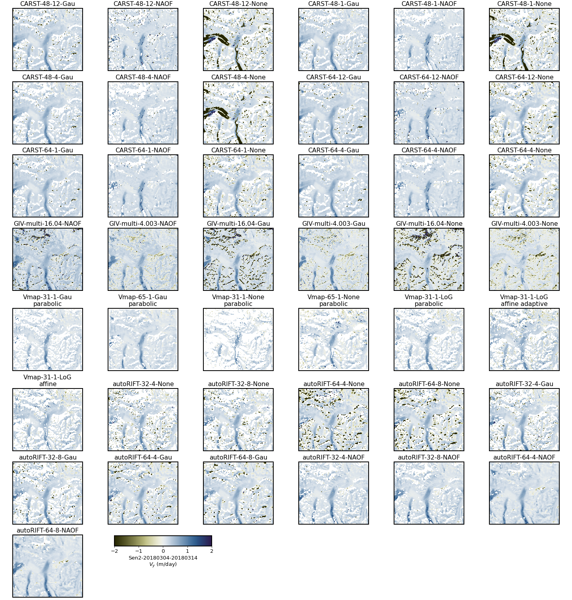

Figures S1-S8: All 172 test velocity maps
Contents
Figures S1-S8: All 172 test velocity maps¶
The label of each panel in Figures S1-S8 indicates the corresponding parameter combination, formatted as (Software)-(Template size)-(Pixel spacing)-(Prefilter). For Vmap results, the subpixel method is also shown in the label. See Table S1 for parameter abbrevations.
To reproduce these figures, see bottom of this page.
Figure S1. \(V_x\) (positive toward image east) of the pair LS8-20180304-20180405.
Figure S2. \(V_y\) (positive toward image north) of the pair LS8-20180304-20180405.
Figure S3. \(V_x\) (positive toward image east) of the pair LS8-20180802-20180818.
Figure S4. \(V_y\) (positive toward image north) of the pair LS8-20180802-20180818.
Figure S5. \(V_x\) (positive toward image east) of the pair Sen2-20180304-20180314.

Figure S6. \(V_y\) (positive toward image north) of the pair Sen2-20180304-20180314.
Figure S7. \(V_x\) (positive toward image east) of the pair Sen2-20180508-20180627.
Figure S8. \(V_y\) (positive toward image north) of the pair Sen2-20180508-20180627.
Code for reproducing the figures¶
import pandas as pd
import glaft
import matplotlib as mpl
import matplotlib.pyplot as plt
#### Font and line width settings ####
font = {'size' : 13}
mpl.rc('font', **font)
axes_settings = {'linewidth' : 2}
mpl.rc('axes', **axes_settings)
def plot_batch(sub_df, component: str='Vx', datestr: str=''):
"""
Plot all Vx or Vy maps from the same image pair.
"""
fig, axs = plt.subplots(8, 6, figsize=(20, 21), constrained_layout=True)
n = 0
for idx, row in sub_df.iterrows():
templatesize = row['Template size (px)']
# change long GIV label "varying: multi-pass" to "multi"
templatesize = 'multi' if templatesize == 'varying: multi-pass' else templatesize
if row.Software == 'Vmap':
label = '-'.join((row.Software, templatesize, row['Pixel spacing (px)'], row.Prefilter)) + '\n' + row.Subpixel
else:
label = '-'.join((row.Software, templatesize, row['Pixel spacing (px)'], row.Prefilter))
ax_sel = axs[n // 6, n % 6]
glaft.show_velocomp(row[component], ax=ax_sel)
ax_sel.set_title(label)
n += 1
# delete empty axes
for i in range(n, 48):
ax_sel = axs[i // 6, i % 6]
fig.delaxes(ax_sel)
# add a colorbar in the bottom
if component == 'Vx':
cbar_label = '$V_x$ (m/day)'
elif component == 'Vy':
cbar_label = '$V_y$ (m/day)'
cbar_label = datestr + '\n' + cbar_label
cax = fig.add_axes([0.2, 0.09, 0.17, 0.017])
mappable = glaft.prep_colorbar_mappable()
fig.colorbar(mappable, cax=cax, orientation='horizontal', label=cbar_label)
return fig, axs
To reproduce the figures, uncomment and run the cell below.
# df = pd.read_csv('../manifest.csv', dtype=str)
# datestrs = ['LS8-20180304-20180405', 'LS8-20180802-20180818', 'Sen2-20180304-20180314', 'Sen2-20180508-20180627']
# for datestr in datestrs:
# sub_df = df.loc[df['Date'] == datestr]
# for component in ['Vx', 'Vy']:
# fig, axs = plot_batch(sub_df, component=component, datestr=datestr)
# fig.patch.set_facecolor('xkcd:white')
# fig.savefig('figs/{}-{}.png'.format(datestr, component))